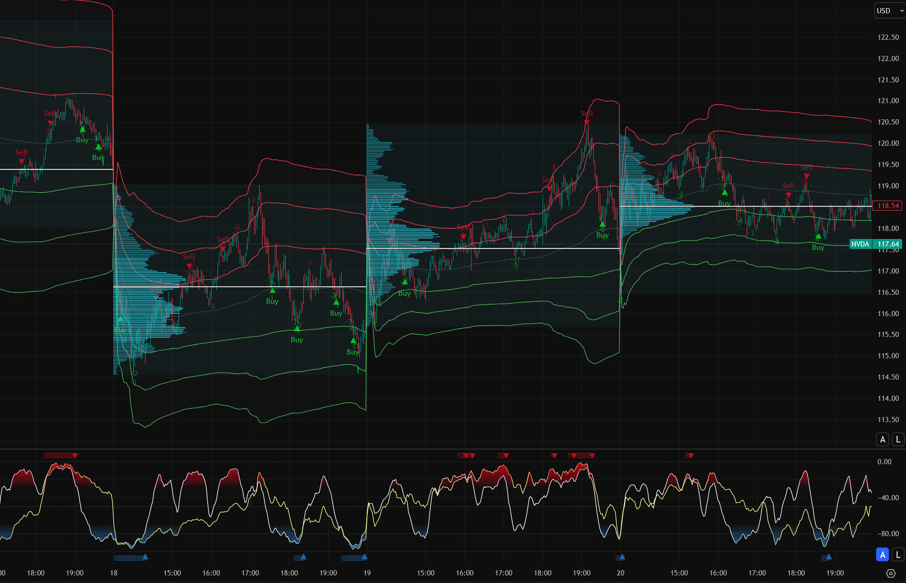
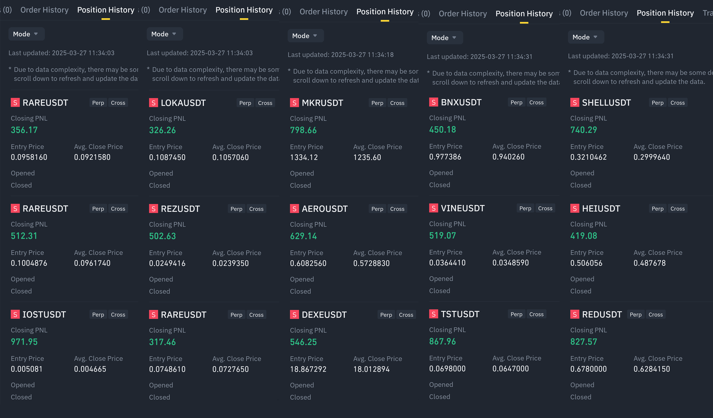
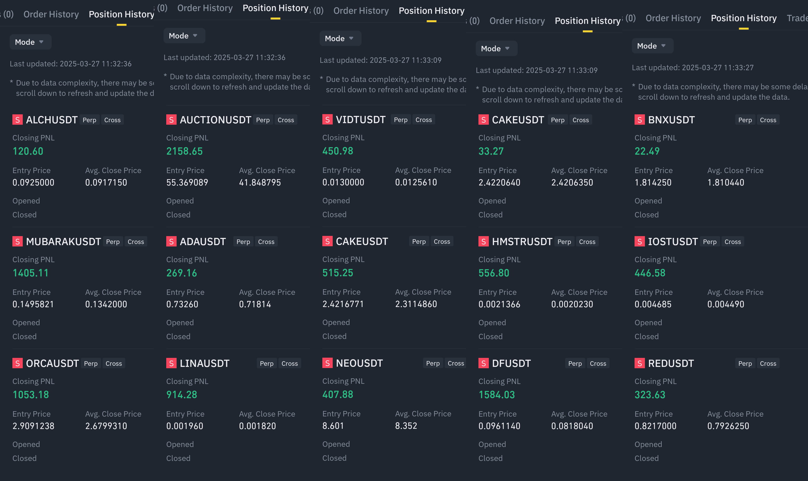
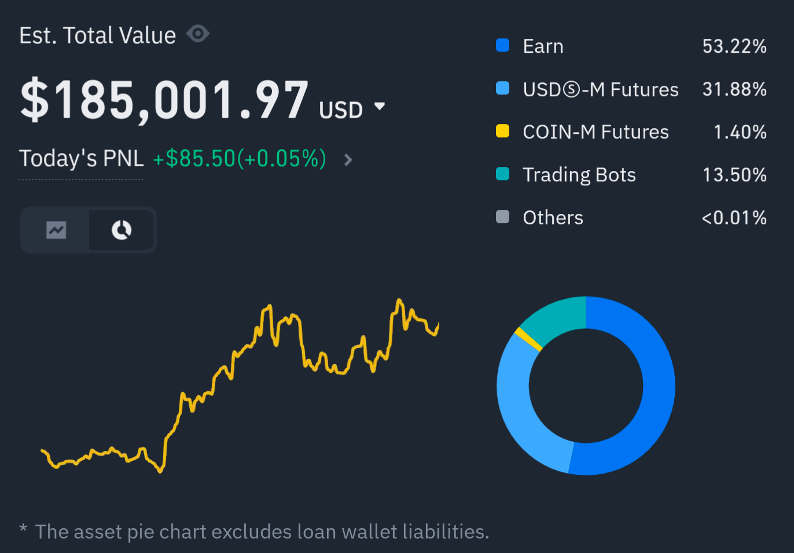

Precision
Where It Counts
Don't Chase the Market. Ride It.
Open-source Pine Script indicators built on volume exhaustion and momentum divergence — signals that tend to precede reversals, not follow them. Free to inspect, free to modify.
* Third-party references are for informational purposes only and do not imply endorsement or affiliation.
Any Asset
Tested on equities, crypto, and forex. Signal logic is price-agnostic — it reads volume behavior, not asset class.
Any Timeframe
Works on 1-minute through weekly charts. Most backtests were run on the 4H and daily — that's where the edge is most consistent.
Full Source Code
No black boxes. The core indicator is free and open-source — read the logic, modify it, or just use it as-is.
Results in Live Markets
The charts below show live and backtested performance across multiple assets and conditions. All results have specific timeframes — expand the images for context.

Outperformed DCA strategy on VOO and VTI over the 2023–2024 backtest period
Outperformed HODL on BTC over the same period — better risk-adjusted entry and exit
65%+ win rate on USDT/Altcoin pairs, Binance, 2024 (200+ signals)


The signal logic
The core signal is volume exhaustion: price continues moving in one direction, but buying or selling pressure is collapsing. That divergence tends to resolve as a reversal — and it shows up before price action confirms it.
The Premium variant layers in Williams %R momentum to filter out low-conviction signals. The result is fewer trades, but a higher percentage of them close in the intended direction.
"The market is filled with individuals who know the price of everything, but the value of nothing."
— Philip Fisher